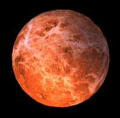
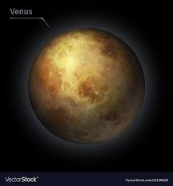

venus
- Venus is the second planet from the Sun. It is named after the Roman goddess of love and beauty. As the brightest natural object in Earth's night sky after the Moon, Venus can cast shadows and can be, on rare occasions, visible to the naked eye in broad daylight.[17][18] Venus lies within Earth's orbit, and so never appears to venture far from the Sun, either setting in the west just after dusk or rising in the east a little while before dawn. Venus orbits the Sun every 224.7 Earth days.[19] It has a synodic day length of 117 Earth days and a sidereal rotation period of 243 Earth days. As a consequence, it takes longer to rotate about its axis than any other planet in the Solar System, and does so in the opposite direction to all but Uranus. This means the Sun rises in the west and sets in the east.[20] Venus does not have any moons, a distinction it shares only with Mercury among the planets in the Solar System.
- 
- 
- The days and seasons are comparable to those of Earth, because the rotational period as well as the tilt of the rotational axis relative to the ecliptic plane are similar. Mars is the site of Olympus Mons, the largest volcano and highest known mountain on any planet in the Solar System, and of Valles Marineris, one of the largest canyons in the Solar System. The smooth Borealis basin in the Northern Hemisphere covers 40% of the planet and may be a giant impact feature.[19][20] Mars has two moons, Phobos and Deimos, which are small and irregularly shaped. These may be captured asteroids, similar to 5261 Eureka, a Mars trojan. Till the date it is said that MARS is the planet which is most investigated and rescearced on. As one of the brightest objects in the sky, Venus has been a major fixture in human culture for as long as records have existed. It has been made sacred to gods of many cultures, and has been a prime inspiration for writers and poets as the "morning star" and "evening star". Venus was the first planet to have its motions plotted across the sky, as early as the second millennium BC.